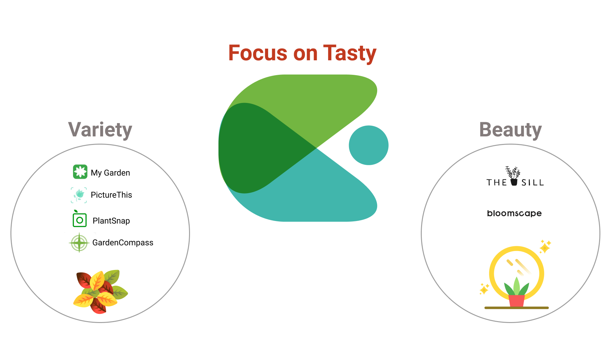

Sep. 2019- Nov. 2019
UX Research,
UX Designer
Gardenio is a plant-selling startup that aims to encourage people to grow their own food in a sustainable manner. I attempted to design a product for them that would improve the user experience while also meeting their business needs.
Conducting research, designing an app, and making interaction designs were among my responsibilities.
Gardenio attempts to sell people organic plants so that they can grow their plants in a sustainable way. However, it discovered that when faced with difficulties in planting, gardeners are prone to giving up. As a result, they're curious about how people can cultivate plants on a regular basis and get more involved with their products.
I do competitive analysis to identify Gardenio's unique value proposition and how it differs from competitors' products, which can help guide future marketing efforts. Gardenio, unlike other gardening apps, sells only edible plants.
I Interviewed people who had previous gardening experience to learn about the difficulties they face.
Among the important findings are
I believe in the value of diverse viewpoints, so I invited classmates to cooperate on a Spring Map to figure out how to improve user experience. In addition, I use HMW to determine the project's direction.
How Might WE...?Based on the tester's feedback, I created a new version.
Changes I made:1. Be able to select several plants
Because customers may purchase a number of plants at once, they should be able to select several plants.
2. Add a progress bar
Because there are several steps to completing the booking, I included a progress bar to keep users informed of their progress.
3. Add the Estimated Harvest Date
To assist users in scheduling the date, add the Estimated Harvest Date to the plant.
My client likes the idea of bringing people together through food, therefore they'll focus more on food-related activities.
From this project, I learned how to think about users while still achieving business goals. Shifting the perspective between businesses and users was a lot of fun for me.
Companies can obtain mutual benefits by using different viewpoints.
Things could be better; certain user pages are excessively text-heavy; there should be a better method to convey the information.